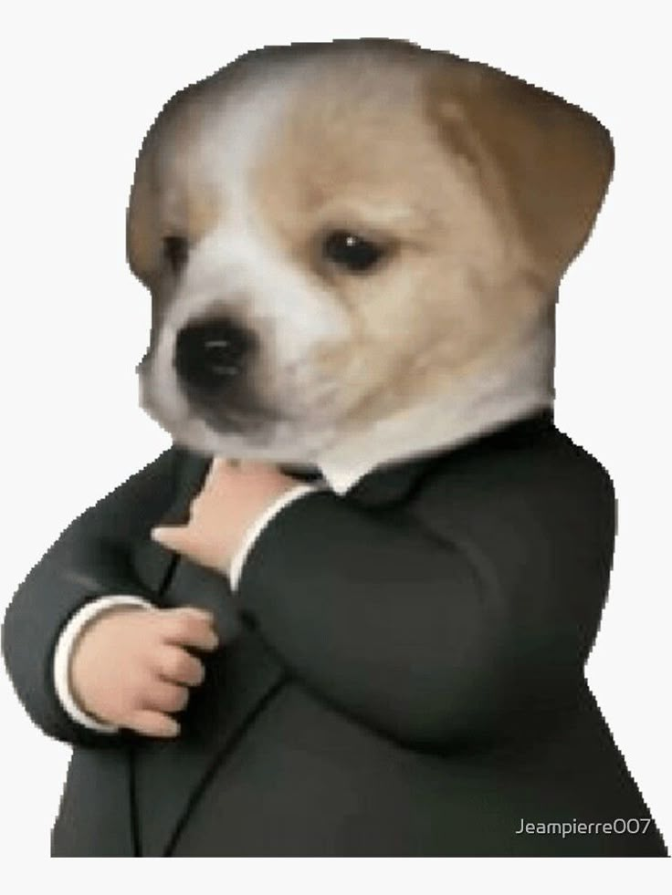
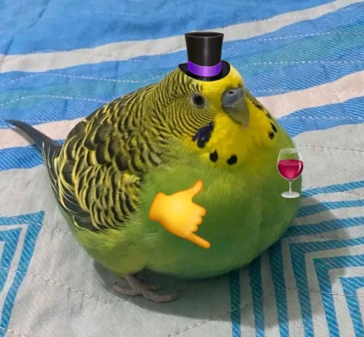

Este es mi perrito, se llama "Chester" y es un perro muy elegante, le gusta usar su smoking con manitas de bebé para acomodar su corbata, es un perro muy educado y siempre se porta bien.


Este es mi gato, se llama "Michi" y es un gato muy elegante, le gusta usar su smoking con manitas de bebé para acomodar su corbata, es un gato muy educado y siempre se porta bien.

Este es mi loro, se llama "Paco" y es un loro muy elegante, le gusta usar su smoking con manitas de bebé para acomodar su corbata, es un loro muy educado y siempre se porta bien.

Este es mi raton albino, se llama "Juan" y es un raton muy elegante, le gusta usar su smoking con manitas de bebé para acomodar su corbata, es un raton muy educado y siempre se porta bien.

Este es mi mono, se llama "Luis" y es un mono muy elegante, le gusta usar su smoking con manitas de bebé para acomodar su corbata, es un mono muy educado y siempre se porta bien.

Esta es mi suricata, se llama "ey ey ey" y es una suricata muy elegante, le gusta usar su smoking con manitas de bebé para acomodar su corbata, es una suricata muy educada y siempre se porta bien.